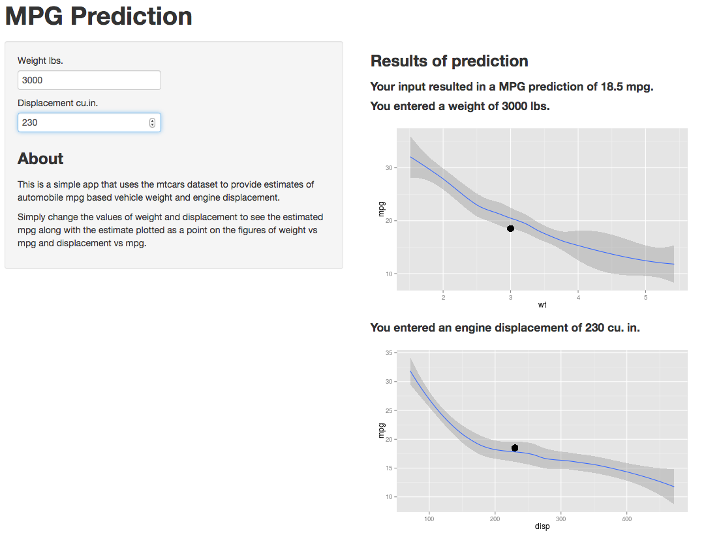

- Saves You Money
- Reduces Climate Change
- Reduces Oil Dependence Costs
- Increases Energy Sustainability
List taken from: http://www.fueleconomy.gov/feg/why.shtml
List taken from: http://www.fueleconomy.gov/feg/why.shtml
We have developed a tool to estimate the expected miles per gallon of a vehicle given its weight and displacement.
These factors were chosen based on step-wise creation of a linear model from the data supplied in the mtcars dataset in R. Loess smoothed lines and 95% confidence intervals are displayed on plots of weight vs mpg and displacement vs mpg to help you set your parameters. Values that produce a dot outside of the interval are not mpg estimates that are modeled well by this program.
We want to evaluate the mpg difference between two 3000 lb cars. One with a 130 cu.in. engine, and a second with a 230 cu.in. engine. By simply setting the weight value to 3000 lbs, you can step through the different displacement values, seeing how the change in displacement maps against mpg, and also noting the output mpg value. Below we show screenshots of the initial and final states of the app under this example.
